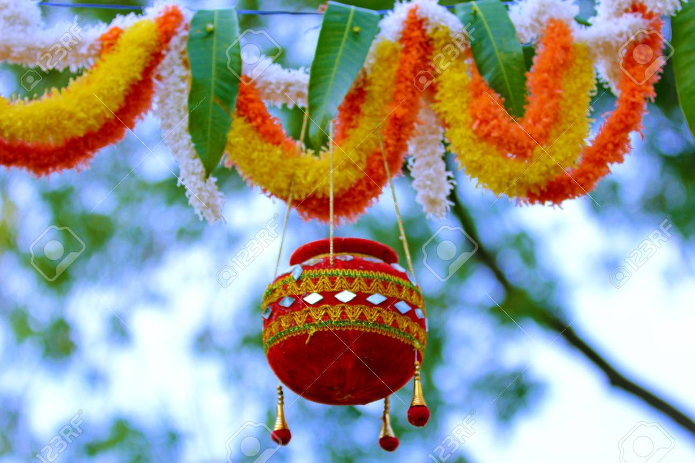

Krishna Janmashtami also known simply as Janmashtami or Gokulashtami, is an annual Hindu festival that celebrates the birth of Krishna, the eighth avatar of Vishnu. It is observed according to Hindu luni-solar calendar, on the eighth day (Ashtami) of the Krishna Paksha (dark fortnight) in the month of Shraavana of the lunar Hindu Calendar and Krishna Paksha in the month of Bhadrapad of the lunisolar Hindu Calendar, which overlaps with August and September of the Gregorian calendar.
It is an important festival particularly to the Vaishnavism tradition of Hinduism. Dance-drama enactments of the life of Krishna according to the Bhagavata Purana (such as Rasa lila or Krishna Lila), devotional singing through the midnight when Krishna is believed to have been born, fasting (upavasa), a night vigil (jagarana), and a festival (mahotsava) on the following day are a part of the Janmashtami celebrations.[5] It is celebrated particularly in Mathura and Brindavan, along with major Vaishnava and non-sectarian communities found in Manipur, Assam, West Bengal, Odisha, Madhya Pradesh, Rajasthan, Gujarat, Maharashtra, Karnataka, Kerala, Tamil Nadu, Andhra Pradesh and other regions.
Krishna was the son of Devaki and Vasudeva and his birthday is celebrated by Hindus as Janmashtami, particularly those of the Vaishnavism tradition as he is considered the eighth avatar of Vishnu. Janmashtami is celebrated when Krishna is believed to have been born according to Hindu tradition, which is in Mathura, at midnight on the eighth day of Bhadrapada month (overlaps with August and 3 September in the Gregorian calendar).